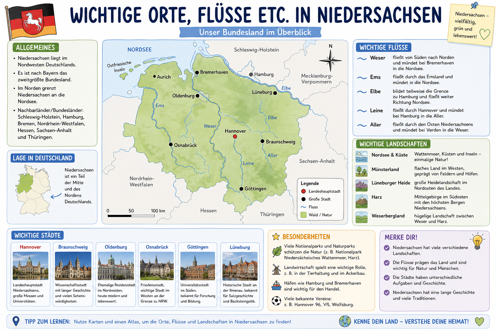

Uebersicht Niedersachsen
Nutze diese Karte als Hauptgrundlage. In den Aufgaben arbeitest du immer wieder mit Staedten, Fluessen, Himmelsrichtungen und Landschaftsraeumen.

Erdkunde Klasse 5
In diesem Modul lernst du wichtige Staedte, Fluesse und Landschaften in Niedersachsen sicher kennen und trainierst das geographische Einordnen mit vielen Uebungen und einem Quiz.
Nutze diese Karte als Hauptgrundlage. In den Aufgaben arbeitest du immer wieder mit Staedten, Fluessen, Himmelsrichtungen und Landschaftsraeumen.

Diese Aufgaben loest du direkt mit deinem Atlas. Seiten koennen je nach Ausgabe variieren, daher arbeitest du mit klaren Kriterien.
Aufgabe wird geladen...
Aufgabe wird geladen...
Aufgabe wird geladen...
10 Fragen aus einem eigenen Quiz-Pool zu Orten, Fluessen, Landschaften und Lagebeziehungen. Du bekommst nach jeder Antwort direkt Rueckmeldung.
Punkte: 0 / 10
Quiz noch nicht gestartet.